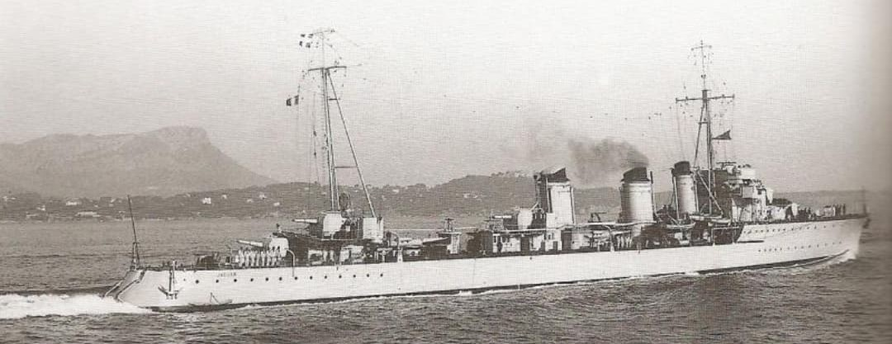
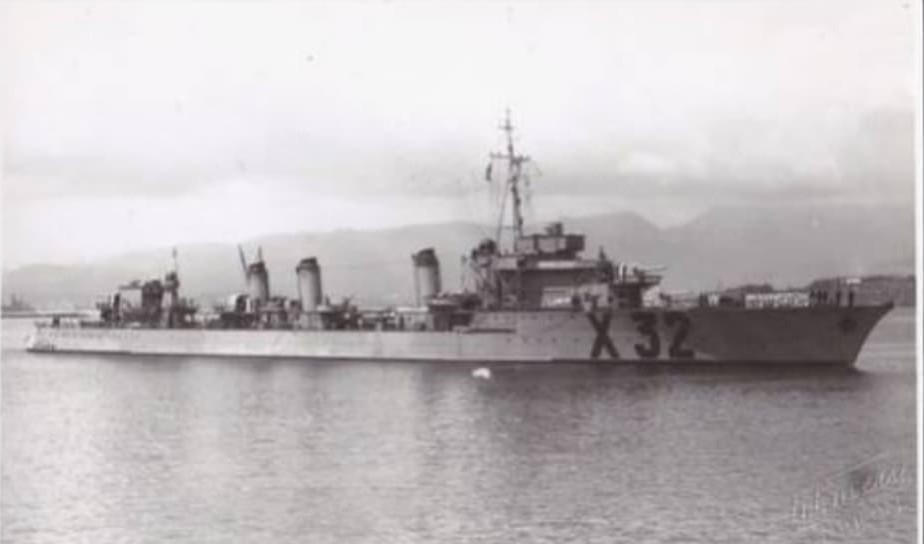
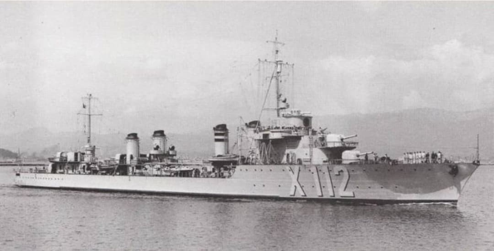
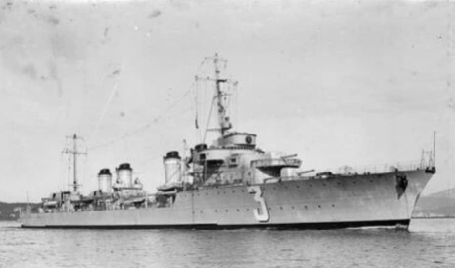
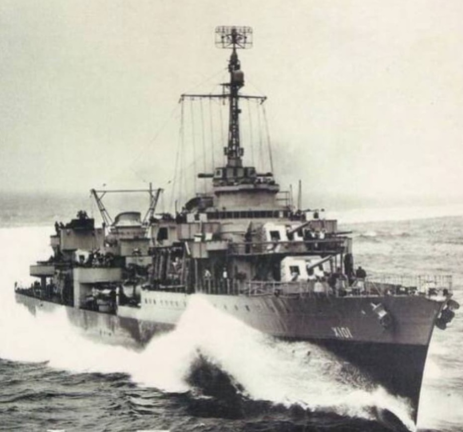
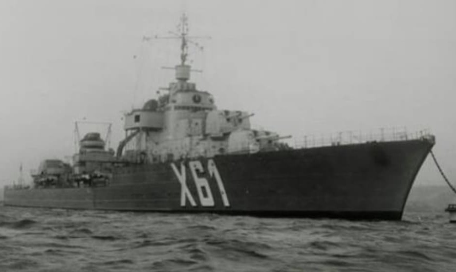

Cette fiche présente l’évolution des contre‑torpilleurs français entre 1920 et 1940. Les informations ci‑dessous sont exposées dans un cadre strictement historique et documentaire, conformément aux exigences muséales de neutralité et de contextualisation.
Les contre‑torpilleurs français incarnent une doctrine unique en Europe : des navires plus grands, plus rapides et plus puissants que les destroyers classiques. Conçus pour mener des raids offensifs, des attaques de nuit, des interceptions rapides et l’escorte des cuirassés, ils forment l’avant‑garde de la Marine nationale. Leur évolution se divise en six classes successives, totalisant 32 navires.
Les contre‑torpilleurs français étaient les « super‑destroyers » de la Marine nationale entre 1920 et 1940. Plus grands, plus rapides et plus puissants que les destroyers classiques, ils formaient l’avant‑garde des escadres.
Leur rôle était multiple : escorte rapide des cuirassés et croiseurs, attaques de nuit, torpillage à grande vitesse, reconnaissance avancée et lutte anti‑sous‑marine. Leur évolution technique se divise en six classes successives, totalisant 32 navires.

Navires : Jaguar — Panthère — Chacal — Léopard — Lynx — Tigre

Navires : Guépard — Bison — Lion — Vauban — Verdun — Valmy

Navires : Aigle — Albatros — Gerfaut — Vautour — Milan — Épervier

Navires : Vauquelin — Kersaint — Tartu — Maillé‑Brézé — Cassard — Chevalier Paul

Navires : Le Fantasque — Le Terrible — L’Audacieux — Le Malin — Le Triomphant — L’Indomptable

Navires : Mogador — Volta
Page du Musée HOP WW2 – Section navires français